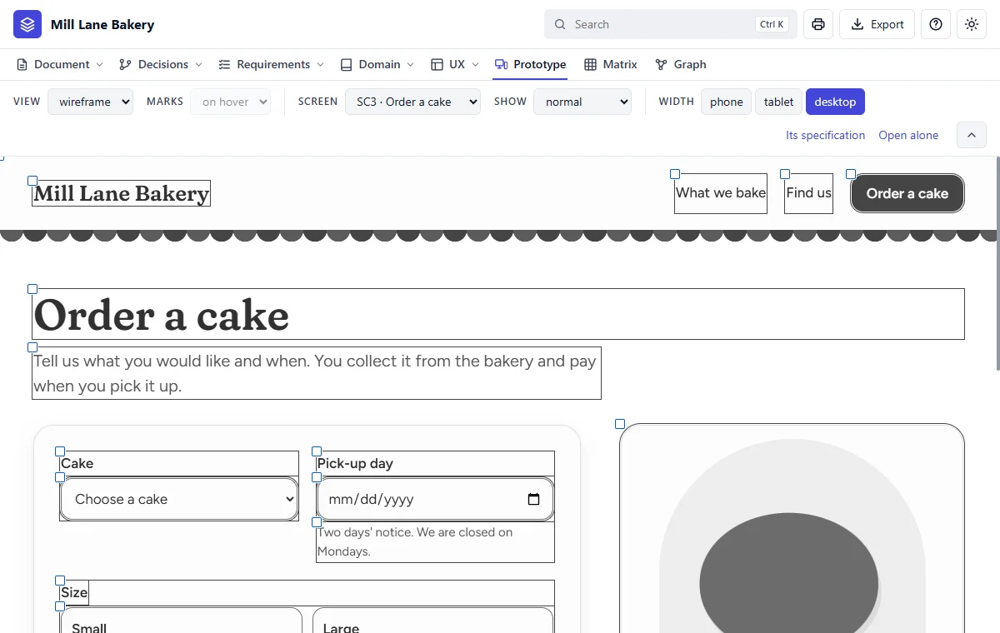

Step 5 of 20 · Make it
Read the first version
What Claude does
Now it writes the whole first version: what the site must do, the bakery's words and rules, the journeys, and each screen as a plain grey drawing. No colours yet: a look is never made up.
In the real session, that first version held:
| Part | First version |
|---|---|
| Goals | 2 |
| Requirements | 11, with 44 checks |
| Rules, things and words | 4 rules, 3 things kept, 3 words defined |
| Flows | 4 |
| Screens | 5, grey and working |
| Components | 7, grey |
| Open questions | 17 |
| Additions to confirm | 18 |

What to read first: the additions
An addition is something Claude added that you didn't ask for. It's marked until you confirm it. Often it's the case you'd have forgotten. In the real session these included:
- What happens if someone sends the order form twice.
- Which days can be pick-up days.
- What the page shows if an order can't be placed.
- Changing or cancelling an order is done by phone.
- One shared password for the staff.
Say this to Claude
Show me what you added. Keep the ones about sending twice and refused details, and drop anything a site this small doesn't need.